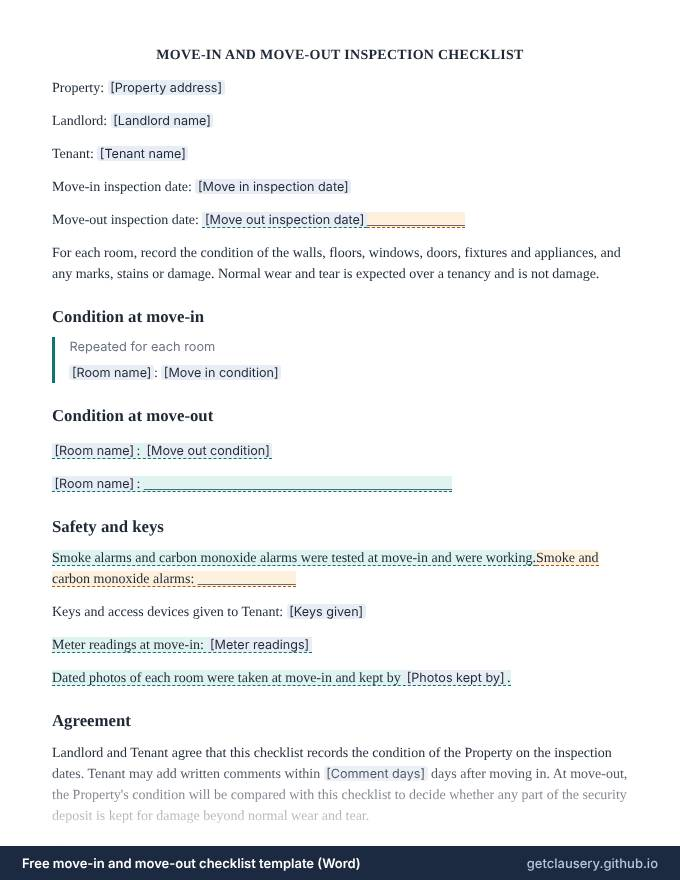

Free move-in checklist template (move-out inspection, Word)
A record of a rental's condition, room by room, at move-in and again at move-out, with smoke and carbon monoxide alarms, keys handed over, meter readings, photos, time for the tenant to add comments, and signatures at both inspections.
Free, with unlimited documents and no sign-up. Your answers stay in your browser. Who it is for: Landlords and tenants at the start and end of a tenancy, to settle what damage was already there before any of the deposit is kept.
Updated · Word (.docx) · Free to use and adapt
Need more than one? Download all 87 templates as one .zip file.
What is in the move-in and move-out checklist
- Property, landlord, tenant and inspection dates
- Condition of each room at move-in
- Condition of each room at move-out, or lines to fill in by hand
- Smoke and carbon monoxide alarms
- Keys and access devices
- Optional meter readings and photos
- Days for the tenant to add comments
- Signatures at move-in and move-out

Read the full template
This is the complete wording. [Labels] are filled in from your answers, and highlighted text only appears when it applies; hover over it to see when.
MOVE-IN AND MOVE-OUT INSPECTION CHECKLIST
Property: [Property address]
Landlord: [Landlord name]
Tenant: [Tenant name]
Move-in inspection date: [Move in inspection date]
Move-out inspection date: [Move out inspection date]______________
For each room, record the condition of the walls, floors, windows, doors, fixtures and appliances, and any marks, stains or damage. Normal wear and tear is expected over a tenancy and is not damage.
Condition at move-in
Repeated for each room
[Room name]: [Move in condition]
Condition at move-out
[Room name]: [Move out condition]
[Room name]: ____________________________________________
Safety and keys
Smoke alarms and carbon monoxide alarms were tested at move-in and were working.Smoke and carbon monoxide alarms: ______________
Keys and access devices given to Tenant: [Keys given]
Meter readings at move-in: [Meter readings]
Dated photos of each room were taken at move-in and kept by [Photos kept by].
Agreement
Landlord and Tenant agree that this checklist records the condition of the Property on the inspection dates. Tenant may add written comments within [Comment days] days after moving in. At move-out, the Property's condition will be compared with this checklist to decide whether any part of the security deposit is kept for damage beyond normal wear and tear.
At move-in:
____________________________ [Landlord name] (Landlord) Date: ______________
____________________________ [Tenant name] (Tenant) Date: ______________
At move-out:
____________________________ [Landlord name] (Landlord) Date: ______________
____________________________ [Tenant name] (Tenant) Date: ______________
The questions you answer
Clausery turns the template into a short questionnaire. Optional parts only appear when they apply.
| Question | Type | Asked when |
|---|---|---|
| Property address | Long text | Always |
| Landlord name | Short text | Always |
| Tenant name | Short text | Always |
| Move in inspection date | Date | Always |
| Is move out | Yes / no | Always |
| Move out inspection date | Date | If “Is move out” is yes |
| Rooms For each item: Room name, Move in condition, Move out condition | Repeating group | Always |
| Has working alarms | Yes / no | Always |
| Keys given | Short text | Always |
| Has meter readings | Yes / no | Always |
| Meter readings | Short text | If “Has meter readings” is yes |
| Has photos | Yes / no | Always |
| Photos kept by | Short text | If “Has photos” is yes |
| Comment days | Number | Always |
Prefer to start from your own wording? Download the Word file, edit it, keep the {tags}, and upload it to Clausery. See the template syntax.
Questions
Why use a move-in checklist?
It is the best evidence of what was already worn or damaged before the tenancy started. Without one, landlord and tenant often disagree about deductions from the deposit. Some states, including Georgia and Washington, require a written move-in condition report before a landlord can keep part of a deposit for damage.
How do I use it at move-out?
Fill in the move-in conditions and print it, or keep the draft. At move-out, open the same draft, tick the move-out option and add each room's condition, or write it on the printed lines.
Should we take photos as well?
Yes. Dated photos or a video of each room, kept by both of you, make the written record much harder to dispute.
Guide: How to write a notice to vacate letter
Related templates
Browse all 87 free templates by category
This template is a general sample and not legal advice. Laws vary by jurisdiction; have it reviewed before use.